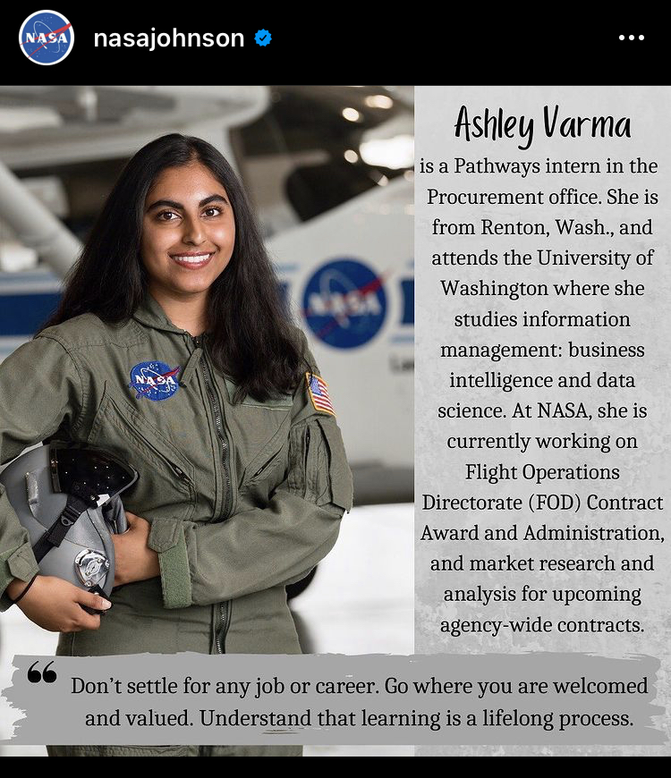
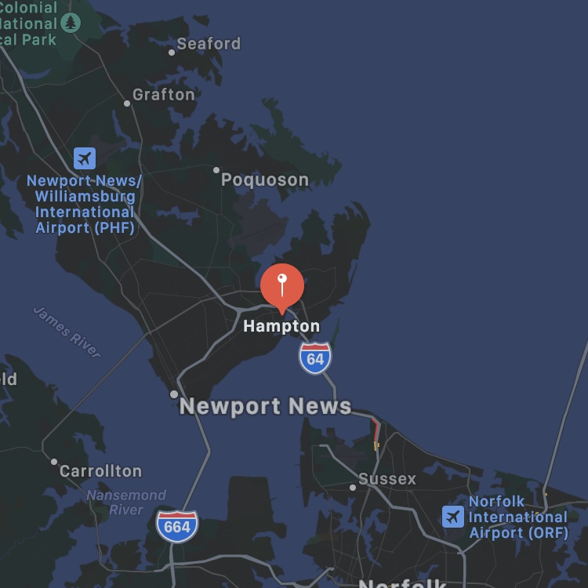
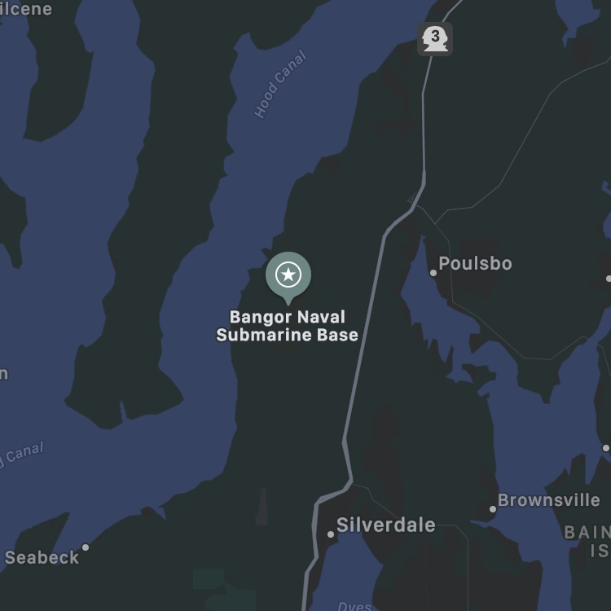
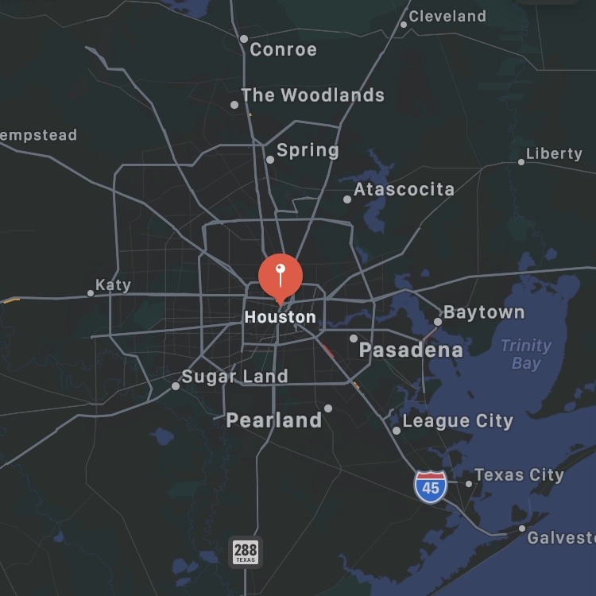

Washington state born and raised, and a huge Seattle Storm fan!
In my free time, I enjoy being outdoors in the PNW nature, trying different global cuisines, and
volunteering in my community. I have an inter-disciplinary background in both mission support
and technical work. Fun fact: Although I'm from the nation's coffee hub, I *rarely* drink coffee.
Education:
University of Washington

-

Langley Research Center
2019
⌯ Systems Eng. & Eng. Methods Branch, Model-based Systems Engineering Intern
⌯ Researched, developed, and tested an in-app immersive knowledge advisor for agency wide use
⌯ Software development, Python scripting, & UX/UI design and implementation
-

Department of Defense
2020
⌯ Strategic Weapons Facility Pacific, Business Data Analyst Intern
⌯ Piloted SharePoint and workflow solutions for increased operations efficiency
⌯ Systems administration, IT Program Management, & critical infrastructure database management
-

Johnson Space Center
2021
⌯ Operations Support Office (BR), Procurement Pathways Intern
⌯ Supported FOD contracts in-progress and selection research:
JOIST ($199.3M),
HRIPS ($73M),
MSOC ($1.1B)
⌯ Received the Pathways Excellence Award for outstanding achievement and professional development from Mark Geyer
Other: 2.5 years of teaching experience in human centered design & eng., data science, & social networks!
-
Familiarize myself with and help advance the ongoing historical schedule data research and input of human
spaceflight missions
-
Develop useful data visualizations for the agency SCoPe meeting as well as for HEO and EISD Leadership
-
Collaborate with programmatic analysts across multiple programs to share ideas and best practices on
analyzing schedules, cost, risks and uncertainty, and on communicating data-based results
-
Create Gateway schedule performance metrics for team data needs
-
Program
Management
-
Be a
Sponge
-
Skill
Development
-
Hold a high level understanding of programmatic technical work to produce timely, appropriate solutions
-
Observe the dynamics of leadership, team work, and forward-planning within XB while shadowing projects
-
Clarify and grasp concepts of the Joint Confidence Level, Program Planning & Control, and Cost, Schedule, & Risk analysis process
This pathways assignment gives me a unique opportunity to meld my technical and business acumen. Now being a month
into my tour and understanding the scope of the work coming through XB, the above are highly relevant and codependent to my success in the
projects mentioned and to my career as a young professional.